AI for Data Analysis
Spreadsheet → answer → chart → one-page report
Formulas, pivots and charts on request in plain words — in Excel, Google Sheets or a chat with a file. Case study: Northstar online shop sales for 2025.
⏱ 2 min. Today we take an ordinary sales spreadsheet and turn it into formulas, a pivot, three charts and a one-page report for a manager — using tools you already have.
The whole lesson uses one file: sales of a made-up shop, Northstar, for 2025 — 1,261 rows plus a reviews sheet. Near the end, a short example with a large YouTube channel database that no longer fits in Excel.
The manager’s question comes first, then the file
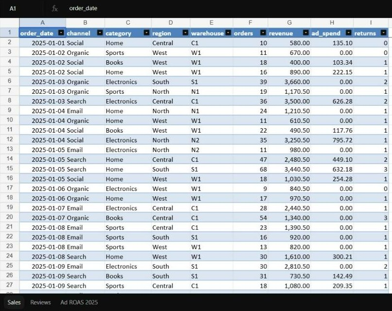
⏱ 3 min. This is what analysis looks like at work: an e-mail with questions and an exported file. On the right is the real lesson file opened in ChatGPT: 1,261 sales rows for 2025 and a reviews sheet.
The e-mail has three specific questions: the year overall, ad return in the second half, autumn returns. Each will become one chart. We spend the lesson answering Anna.
Ask the Teams chat: “Which question from the e-mail would you check first, and why?” Collect 2–3 answers.
First prompt: describe the file and suggest 5 questions
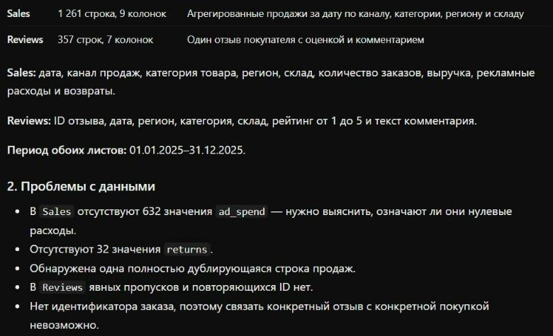
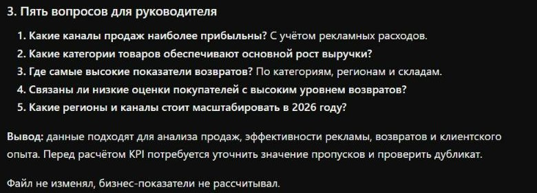
⏱ 4 min. This is the first prompt for any file. It does two things: the model describes what is in the table and suggests questions. “Don’t change anything yet” matters: without it the model may quietly drop duplicates or fill blanks, and you won’t know what it changed.
Left: the real answer — 1,261 rows, 1 Jan to 31 Dec 2025, one fully duplicated row. Right: five manager questions. The first, about channels including ad spend, matches Anna’s e-mail: Demo 1 computes it. The third, about returns, is Demo 2.
The model got it wrong: it said “632 ad_spend values are missing”. The file has zeros there: Email and Organic have no advertising. It also missed the text date 10/05/2025. Ask back: “Are these missing or zeros? Any dates in another format?” The data owner knows what the zeros mean.
Pick the tool by where the data lives
⏱ 4 min. Four places where AI helps with data. The choice is simple: where does the file live, and what do you need at the end?
Excel: when the data is already in a workbook that colleagues open. AI writes formulas you can see in the formula bar. AI panels: Claude for Excel (paid Claude plans), Copilot in Excel (Microsoft 365 Copilot licence), ChatGPT for Excel. Without a panel, the demo workaround works: upload the file to a chat and download a workbook with formulas.
Google Sheets: Gemini in the side panel does pivots, charts and formulas if the company has Google Workspace with Gemini. Chat with a file: the fastest start, and you see the code. Database: when there are millions of rows — slide 13.
To check whether you have Copilot in Excel: look for the Copilot button on the right of the Home tab. Button names and plans change, so check on the day.
You can ask for a formula and a chart in words
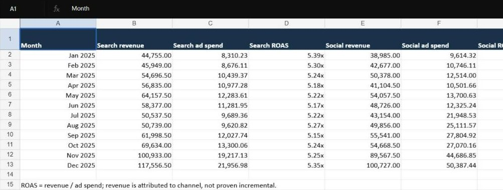
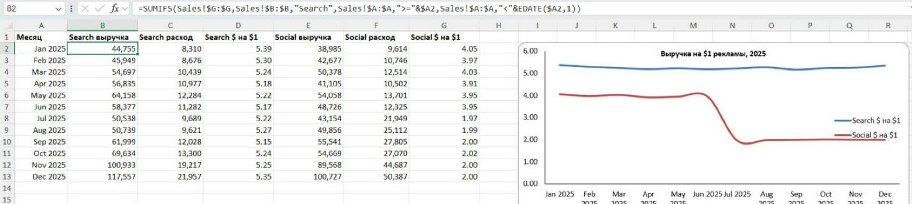
⏱ 12 min (2 prompts + open the workbook). Follow runbook L08_04. Upload northstar_2025.xlsx to ChatGPT. Prompt 1 is the file description from the previous slide. Prompt 2 is on screen.
Key words in the prompt: “Excel formulas, not pasted numbers”. Without them the model often pastes computed values, which can’t be checked in the workbook. Download the file, open it in Excel and click an ad-return cell. The formula bar should show revenue divided by spend, e.g. =B2/C2. Revenue and spend should be formulas too (SUMIFS over the Sales sheet).
What you will see: Search returns about 5.4 per $1 all year. Social drops from about 4 to 2 in July. That is the second story from Anna’s e-mail; we come back to it after the break.
Top right is the real sheet from the workbook ChatGPT returned: in our run the cells held numbers, not formulas. Below is the same table in Excel where revenue is a SUMIFS over the Sales sheet and the return is =B2/C2, with a chart built on those cells. That is how the workbook should look after “replace the numbers with formulas”. Reference workbook: demo_v2/excel_demo/northstar_2025_formulas_EN.xlsx. If you have Claude for Excel or Copilot, show the same request in the side panel, 90 seconds. If the service takes longer than 90 seconds, show the ready frames and move on.
Growth this year: +161.7% or +15.1%? It depends on the base
⏱ 3 min. The file’s first story: seasonality. December vs January: +161.7%. December vs November: +15.1%. Both numbers are right, but they sound very different.
Models happily write “160% growth”. Your job is to ask: from what base? January after the holidays is the weakest month; November and December are sales season. Only the monthly chart shows this; the annual total doesn’t.
The chart is built from the lesson file when the deck is generated; numbers match demo_v2/answers.md.
Five questions, five charts — all from our file
⏱ 4 min. Five typical questions and a chart for each, all built from the Northstar file. Time — line: the year-end peak is visible. Comparison — sorted bars, axis from zero. Distribution — histogram: most rows have 2–8% returns, but there is a tail at 14% and above; that is warehouse N2. Relationship — scatter: each dot is one channel-month; Social’s amber second-half dots moved right (more spend) but not up. Shares — 100% bars, no more than 4–5 parts.
AI happily makes a “six-chart dashboard”. Ask for one chart per question; it is easier to check and to present.
5 minutes
Next: a demo in a chat with a file — returns, reviews, a slide-ready chart. Then a large database, a one-page report and homework.
⏱ 5 min. Press “Start”. Keep the chat open: after the break we continue in it, because prompt 6 builds on the charts from demos 1 and 2.
6% returns for the year. One cell shows 24.8%
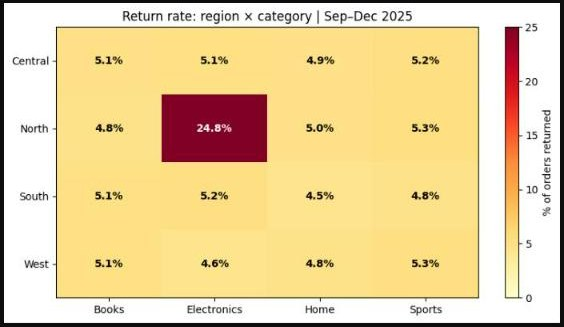
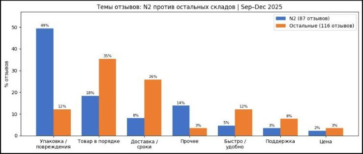
⏱ 12 min (3 prompts). Same chat, the file is already uploaded. After each answer open the code: the “Analysis complete” block or the code button above the chart.
Prompt 3: the heatmap. The overall return rate is about 6%, but one cell lights up: North × Electronics — 24.8%. The rest are about 5%. The annual total hides it.
Prompt 4: reviews. The model picked warehouse N2 by itself and sorted reviews into themes. “Packaging / damage” is 49% at N2 and 12% elsewhere. The text explains the number: parcels arrive damaged.
Prompt 5: a slide-ready chart, covered in detail two slides on. If any prompt takes longer than 90 seconds, show the ready frame and move on.
Two problems the annual total doesn’t show
⏱ 4 min. Two findings from the demo, redrawn from the data. Left, Social: from July ad spend nearly tripled (first half $69,402, second $197,009) while revenue grew 43%. Each ad dollar now brings half as much. The annual total looks fine: revenue grows.
Right, warehouse N2: until August returns match everyone else; from September about a quarter of orders. Reviews explain why: crushed boxes, broken screens. The numbers say where; the text says why.
To avoid confusion: warehouse N2 is the North × Electronics cell from the heatmap. The cell shows 24.8% for September–December; the monthly line is about 26% in some months.
Ask the chat: “What would you suggest to Anna for each finding?” We’ll discuss “cut Social” on slide 16.
You edit a chart with words, like text
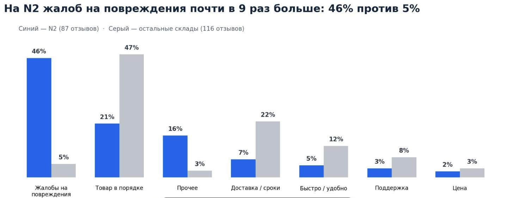
⏱ 4 min. This is prompt 5 from the demo. Left: the chart the model builds by default — a topic title, a legend, two bright colours, small labels. Right: the same chart after one prompt. The right one goes into a manager’s slide.
The five rules in the prompt work for any chart: title = finding; sorted; labels on the bars; nothing extra (legend, grid); one accent colour. Save the prompt; it is in the cheatsheet.
Look closely at the numbers: 49% became 46%. That is the next slide.
Three versions of a chart, three different numbers. Compare after every redo
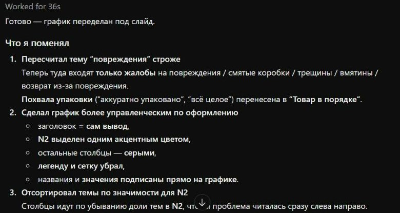
⏱ 3 min. We only asked for a new look. The model also re-classified the themes: praise of packaging (“neatly packed”) moved from “damage” to “product OK”. The share became 46%, and 44% in the final report. By the labels we used to build the practice file, 53 of 87 reviews are about damage — 61%. The model searches by keywords and misses complaints written in other words.
The N2 conclusion doesn’t change: there are many times more damage complaints there than elsewhere. What changes is the number that goes to the manager. So after every redo compare a couple of numbers with the previous version, and check review themes by reading a sample.
A 60-second check in three steps. Rows: how many before, how many after. One point: find one number from the chart in the source file by eye. Percent base: from which month, over what period.
For the curious, an experiment from lesson prep: on a small table, models without code got the sum right but “fixed” a row with 66 returns on 62 orders to 6, while the source said 4. Tell the model’s guess apart from the data. Details: demo_assets/no_code_experiment_2026-10-13.md.
The database updates daily: don’t export a file, ask the database
⏱ 5 min (ready frames, not run live). This is the course author’s working database: cooking YouTube channels collected via the official API. 26,544 channels, 416,809 videos, 668,665 view measurements. The data sits in three linked tables and updates daily, so exporting a file for every question is impractical.
Same move as with Excel: you describe the table and ask in words, the model writes an SQL query, the database counts in a second. SQL reads almost like English: select the length, count the videos, take typical views, from the videos table, grouped by length. MEDIAN is the typical value: half the videos above, half below. Rare viral hits spoil the average.
The first answer is tempting: 20–40-minute videos get 12× more views than short ones. But big channels, which already have many viewers, make long videos more often. A second query compares each video with ordinary videos of its own channel, and the gap nearly disappears. This data does not prove “make long videos”. Same story as with Social.
The sample is anonymised: descriptions, links, phone numbers and YouTube ids removed; no e-mails in the sample. We don’t hand the files to students, only show the charts. Queries and answers: demo_v2/channels/queries.sql and results/answers.md.
Look for an Export button first, then an API. Scraping is the last option
- the site’s terms allow it
- no personal data
- you don’t overload the site
Before you start this slide, send prompt 6 (report and script) to the chat: the answer takes 3–4 minutes and will be ready by slide 15.
⏱ 3 min. The data you need almost always already sits somewhere. First look for an export button: CRM, accounting software, ad accounts and YouTube Studio all have one. It is the fastest and safest route.
Second, an official API: a program’s way into the service. The answer comes as JSON, like the middle of the slide. You don’t write the code yourself: AI writes a script that turns the answer into a table. The channel database we just saw was collected this way, through the YouTube Data API. The JSON on the slide is simplified.
Third, scraping: a program reads a site’s pages. It is the last option. Three checks: the site’s terms allow it, no personal data, you don’t put load on someone else’s server. For most work tasks, export is enough.
Send the manager the report file. The chat preview can lie
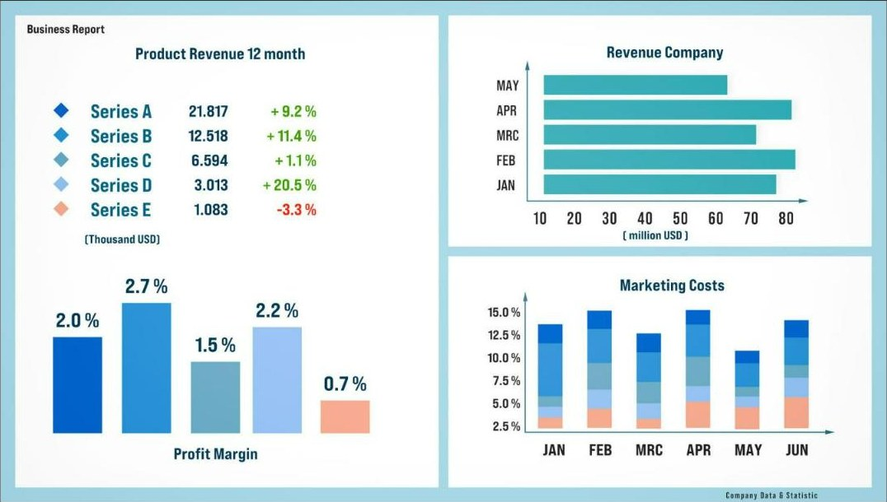
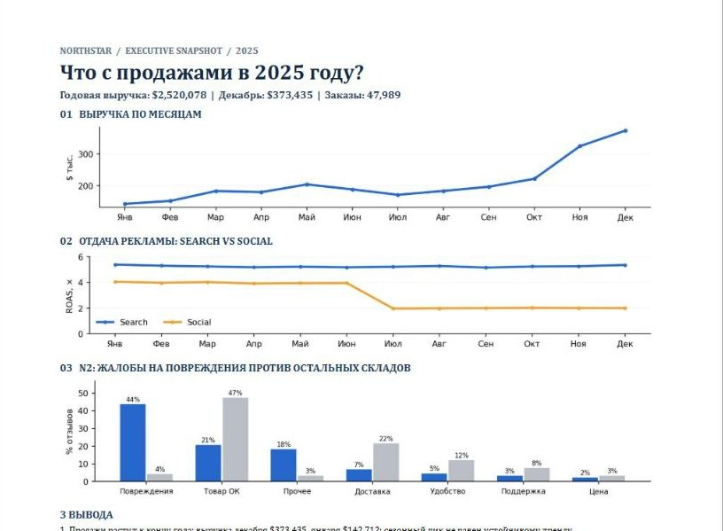
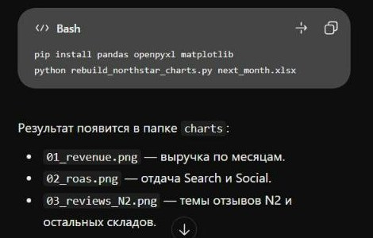
⏱ 5 min (1 live prompt). The result of an analysis is a file you can forward, not a chat screenshot. Prompt 6 asks for two things: a report page and a recipe script.
Left: what ChatGPT showed in the chat as the report preview — a stock picture with “Series A–E” and someone else’s numbers. Centre: the same report downloaded and opened — everything is there, with our numbers. Simple rule: don’t judge the preview, check the opened file.
Right: the recipe — a script that builds the same three charts from next month’s file. In January you don’t repeat the whole conversation: drop in the new file and run the script, in Colab or by asking the chat: “run this script on the new file”. Caveat: the script expects a workbook with Sales and Reviews sheets. On the practice demo_v2/northstar_sales_2026-01.csv (sales only, one month) the reviews chart won’t build and the monthly chart has one point. That is fine: tell students in advance.
The table says what happened. Only a test shows what a budget cut will do
⏱ 2 min. After the Social finding it is tempting to cut the budget at once. Models often advise exactly that. But the table describes the past. Season, audience, creatives and the rules that credit a sale to a channel all affect both budget and revenue.
A good AI answer sounds like: “this data can’t say how much revenue would be lost; I suggest a test”. If the model didn’t say so, ask: “What assumption are you making?”
What you may upload to a chat
⏱ 2 min. A traffic light. Green — practice and public data, like our file. Amber — internal company data, only in the work account. Red — personal data of customers and staff, finance, health: only in a company-approved environment.
Settings as of October 2026: business plans (ChatGPT Business/Enterprise, Claude Team/Enterprise/API, Google Workspace) are not used for training by default. In personal accounts check the settings named on the slide.
A pack you can send to a manager
northstar_2025.xlsx. Answer Anna’s e-mail: how did sales go this year, and what should we check next?⏱ 4 min. The homework result is a five-part pack another person can open and understand in 5 minutes. An Excel workbook with an AI-written formula, a pivot and a chart. Three charts, one as a before/after pair. A one-page report. A recipe: the prompt and a script that builds the charts from the January file. A checks file.
No paid licence needed: the chat-and-download route works for everyone. Your own work data only if anonymised and allowed, per the traffic light. One required item: a statement that suggests itself but the data doesn’t support. For example, “if we cut the Social budget, revenue won’t drop”.
What to take away
⏱ 2 min. Five moves you can use on your own spreadsheet on Monday: the describe prompt, formulas in words, one chart per question, the report as a file with a recipe, and 60 seconds of checks.
L09 teaser: in Claude an analysis can become an artifact — an interactive page with charts that colleagues open by link. Questions.